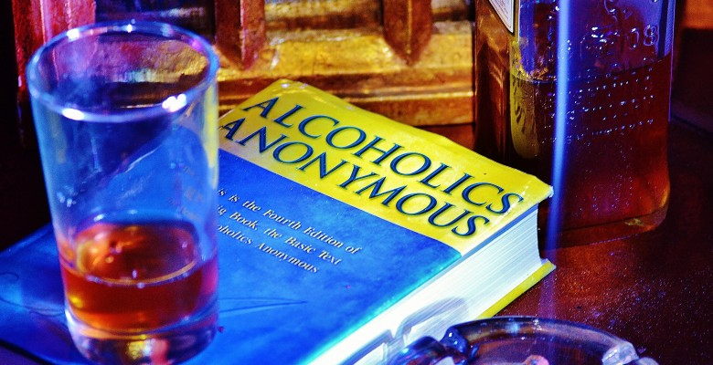
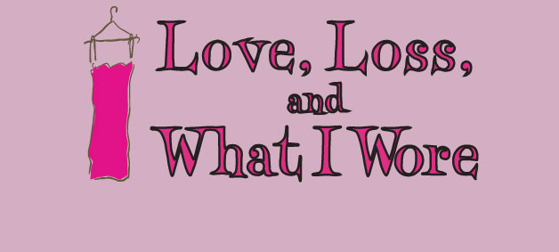

Votes for Women and Nothing Less
Greetings fans! I know you probably have many competing opportunities for celebrating Women's History Month, so lock this into your calendars early! One weekend only, on March 17 - 19, Carol will be portraying Susan B.…
1 commentPlaza Suite
We're back! I realize it has been over a year since our last posting. I guess that's what happens when life gets in the way. Carol has been keeping busy this past year with many of her odd jobs, but less stage acting...…
1 commentAlways A Bridesmaid
Greetings fans, and welcome to 2015! I trust your new year is off to a great start; but if you need a little injection of entertainment and comedy, mark your calendars to see Carol's upcoming show, Always a Bridesmaid.…
1 commentFather Tony Zamboni's Christmas Shorts
Merry Christmas, fans! Yes, I know it's only just past Thanksgiving. But what better way to prepare for the Christmas season by seeing our favorite thespian in a Christmas-themed show? You can do just that by visiting…

Bill W. and Dr. Bob
Greetings Fans! Whatcha doin' this weekend? Why not come out to Naperville's Center Stage Theater and see our favorite actress in a show? Carol will be appearing In Bill W. and Dr. Bob, which is the touching story of…

Love, Loss, and What I Wore
Greetings fans! Spring is upon us, and it is the perfect time to see a show! Why not come to see Carol in Love, Loss, and What I Wore? Ladies, bring your men! Performances are at 8:00pm on May 2nd, 3rd, 9th, and 10th,…
1 comment
And We Will Share The Sky
Note: this same post also appears on the other site — https://www.caroltownsend.com/blog/2014/2/17/and-we-will-share-the-sky. Both versions are kept; they differ slightly in length and each carries its own copy of the…

And We Will Share The Sky!
Note: this same post also appears on the other site — https://caroltownsendfan.blogspot.com/2014/02/and-we-will-share-sky.html. Both versions are kept; they differ slightly in length and each carries its own copy of the…
2 commentsA brand new site!
Greetings Fans! hange is good, and it seemed like it was about time to change things up and build a new site. That old shamrock green template may have been good for St. Patrick's Day, but every other day of the year,…
Twisted Olive and Friends
Happy New Year! Better late than never. That statement applies to both my new year sentiments, and the notification of Carol's return to the stage... starting this weekend!! (and no... despite the date today, this is…